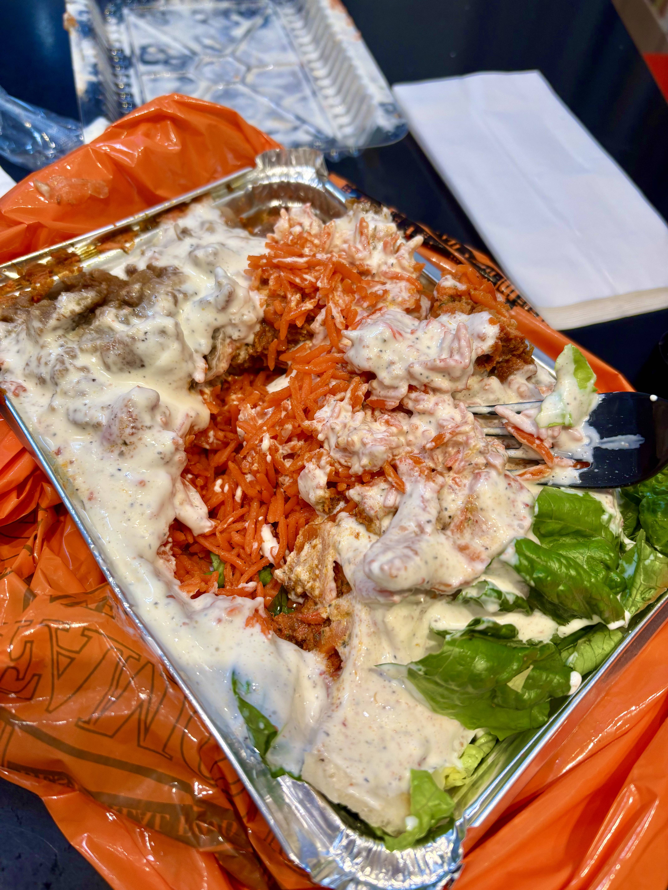

🥙 Food Truck
Adel's Famous Halal Food
A beloved NYC halal food truck and a feature in NYC. Their mix-over-rice platter loaded with white sauce and hot sauce is the ultimate late-night fuel. Absolutely worth every bite!